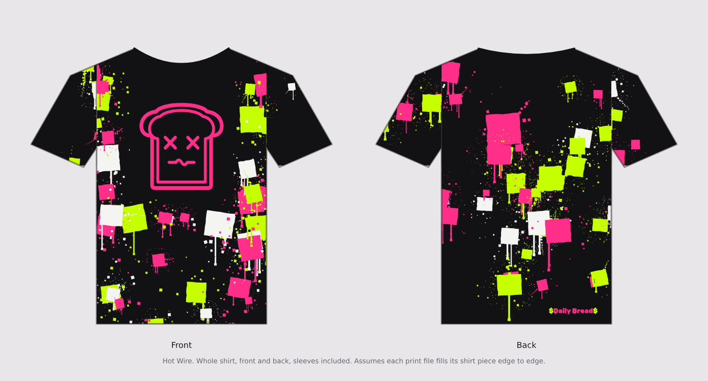
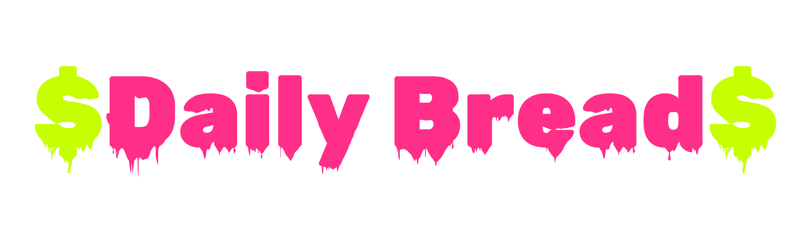
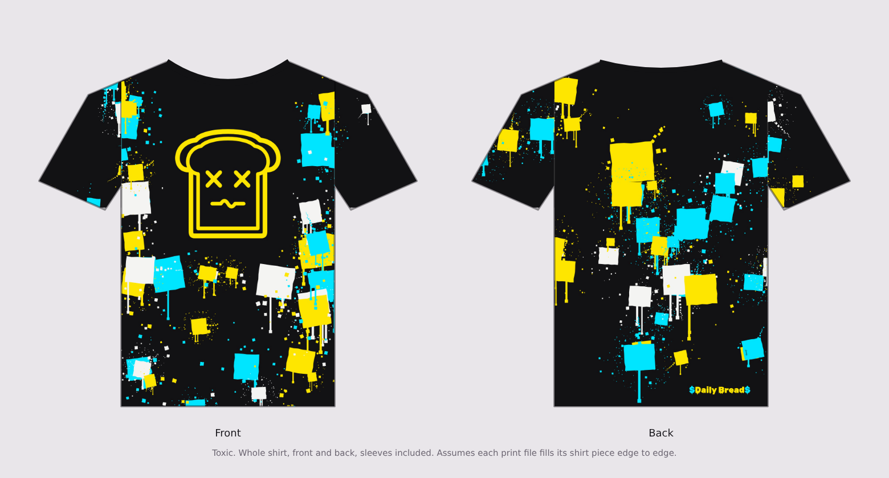
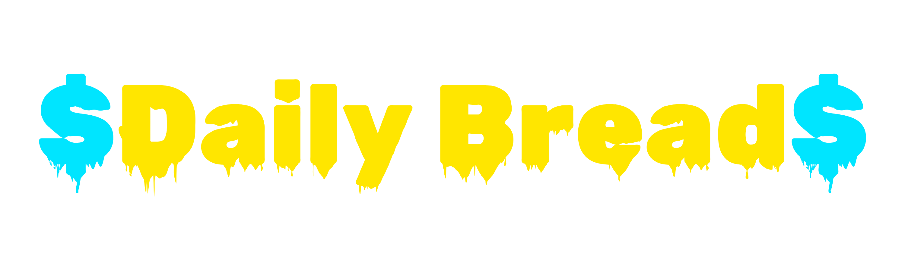
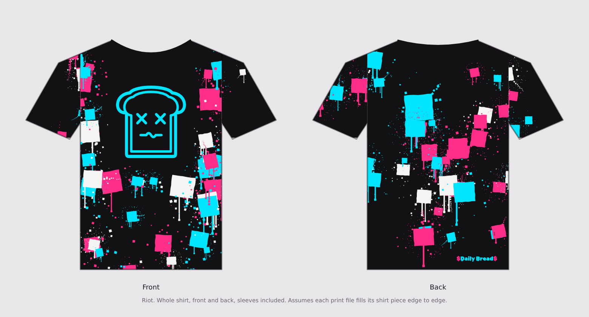
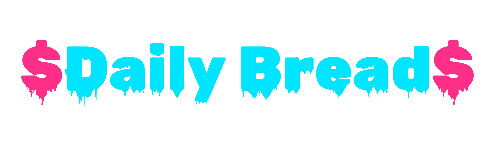

Coma Toast · PaintShop · Printful all-over print finals
The PaintShop tee in Hot Wire, Toxic and Riot. On the front, the 10 in outline toast sits in a clean dark window, framed by square paint blocks, with open space around the collar. On the back, more blocks, $Daily Bread$ in Wet Paint along the hem at the bottom right, and a tiny "Esteef" hidden on one of the blocks.


paintshop-hot-wire.zip

paintshop-toxic.zip

paintshop-riot.zip| File | Size | Use for |
|---|---|---|
front.jpg | 3600 × 4800 | Front, with the toast 10 in tall and about 9.7 in wide, top edge about 6.1 in down. |
front-no-logo.jpg | 3600 × 4800 | Front without the toast, if you’d rather place the logo PNG as a layer. |
back.jpg | 3600 × 4800 | Back, with $Daily Bread$ 1.5 in above the bottom edge and the hidden signature. |
sleeve-left.jpg, sleeve-right.jpg | 3600 × 2400 | Sleeves. |
coma-toast-<colorway>.png | 3000 × 3000, transparent | The toast alone. |
daily-bread-<colorway>.png | 3000 × 900, transparent | The wordmark alone. |
front.jpg, back.jpg and the two sleeve files to their placements, each set to fill.Every panel is oversized (24 in wide at 150 dpi) so Printful can crop it to the shirt. I couldn’t reach Printful’s template from here, so check each placement in their preview before ordering.